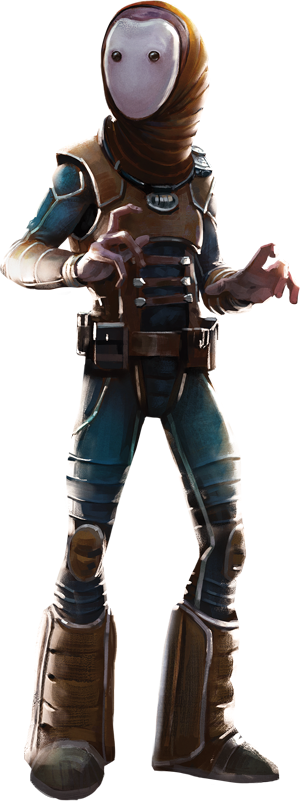

Polis Massan
polis massan
Special Abilities: Polis Massans begin the game with one rank in Medicine. They still may not train Medicine above rank 2 during character creation.
No Vocal Cords: The vast majority of Polis Massans are born without vocal chords, though a small subset does possess them. Referred to as "speakers" by their people, these rare individuals can physically speak languages, though their voices are soft and strangely resonant. When creating a Polis Massan character, a player may spend 10 starting XP to specify that the character possesses vocal chords.
Telepathy: Polis Massans can communicate with other beings at short range using a simple form of telepathy. This communication is akin to a broadcast, and anyone within short range "hears" the Polis Massans speech. Polis Massans can only "whisper" privately to beings they are engaged with.
Originally hailing from the Outer Rim world of Kallidah, the Kallidahin are more often referred to as Polis Massans. They are best known for their vast and intricate archaeological digs in the asteroid field that shares their adopted name. The Polis Massan people have searched for centuries, looking for a link between themselves and an enigmatic species—now extinct—called the Eellayin. Peaceful and isolationist, Polis Massans are experts in the fields of archaeology, medicine, and xenobiology.
Polis Massans are a small-bodied species standing an average of 1.4 meters tall. They are descended from a cetacean ancestor, as evidenced by smooth, gray skin covering a thin layer of insulating blubber. With the exception of a pair of expressionless black eyes, Polis Massans possess no facial features at all. Despite this, they are incredibly communicative in their use of gestures, signs, and body language. Though the majority of Polis Massans lack vocal chords, they are able to communicate with others using a simple form of telepathy.
Polis Massan society is based on community, the desire for fulfilling work, and a deep hunger for knowledge. Though they lack a shared consciousness, Polis Massans see their species as a collective in which everyone is supportive of one another and eachmember serves an important role. As such, every Polis Massan views his fellows as siblings. Though there are invariably differences of opinion between individuals, they attempt to bridge these gaps by using their shared ancestry as common ground.
Polis Massans are kind and pacifistic to a fault. While fully capable of defending themselves, they seldom take up arms due to their belief that all life is sacred. Aggression is not in their nature, and anger and hatred are foreign concepts to them. This often leads to their being taken advantage of, since they rarely, if ever, put up any sort of struggle when their interests are threatened.
The overwhelming focus of the Polis Massan people is their attempt to find some link between themselves and the Eellayin. They view the Eellayin as kin, however distant, who were lost to some unknowable apocalypse. They seek to keep the memory and works of this mysterious species alive through their own research, even going so far as to attempt to clone them from Eellayin genetic material discovered in their explorations of the asteroids’ depths.
The Polis Massans are originally from Kallidah, a moist and temperate world in the Subterrel sector. Soon after establishing a base on Polis Massa in an attempt to research the Eellayin people, the entire species relocated to the barren asteroid in order to support the excavations there. Though Kallidah is relatively close to Polis Massa, the Polis Massans have found no reason to return to their original homeworld.
Polis Massa is the largest asteroid in the Polis Massa Asteroid Field. The field is composed of countless fragments of the Eellayin homeworld, which was destroyed by some kind of cataclysm long ago. Though the asteroid is airless and incapable of supporting life, the Polis Massans have established a number of outposts where they can live and perform their research in peace.
The native language of the Polis Massan species is known as Massan. Because few Polis Massans possess vocal chords, the language is a combination of elaborate signs, body language, and telepathy. Though they are able to learn the languages of other species, the average Polis Massan lacks the organs required to actually speak them. A rare few Polis Massans do possess vocal chords, however, and many such individuals have proven to be skilled linguists.
While Polis Massans have long supported the Rebel Alliance indirectly, it is a rare individual who actively seeks to fight against the Empire in a more direct capacity. When a Polis Massan does join the Rebellion, it is often in the role of a doctor, medic, or other healer. Polis Massan scholars have also been known to join the Alliance for a chance to see other parts of the galaxy for themselves and to meet members of other alien species first hand.
The diminutive people of Polis Massa have delved into the depths of their asteroid home in search of traces of the Eellayin people. Though the majority of their discoveries involve artifacts and relics from that ill-fated species, they have also managed to recover a significant amount of genetic material. Presumably Eellayin in origin, this genetic material comprises the most precious discoveries the Polis Massans have made.
Following long years analyzing the alien DNA, the Polis Massans decided to use their own cloning techniques in an attempt to recreate an Eellayin. Doing so required them to construct a high-end cloning facility in the Polis Massa Research Base. Though most of the facility’s equipment was built by the Polis Massans themselves, they had little compunction about purchasing additional paraphernalia from the Kaminoans, a little-known species possessing exceptionally advanced cloning methods.
Though Polis Massan cloning techniques are advanced by most standards, they are focused primarily on their species’ own physiology. Their initial attempts to recreate an Eellayin from the recovered genetic material met with failure. While the Polis Massans have successfully cloned members of extinct species in the past, the quality of the Eellayin genetic material has been subpar and incomplete.
Since their failed attempts to clone an Eellayin, the Polis Massans have approached the Kaminoans once more and asked for their direct assistance. The Kaminoans have since sent a number of specialists to Polis Massa Research Base to analyze the genetic material the Polis Massans have on hand. Additionally, the Kaminoan specialists are reviewing the Polis Massan cloning techniques and equipment in an attempt to improve them. As is their way, the Polis Massans have kept their involvement with the Kaminoans a secret, and they aren’t inclined to share the knowledge with anyone else.
Additional Eellayin DNA continues to be discovered, analyzed, and cataloged by Polis Massan exobiologists. While a successfully cloned Eellayin has yet to be created, both the Polis Massans and their Kaminoan advisors are certain that their efforts are going to bear fruit given time. The implications of such a success continue to remain a mystery.